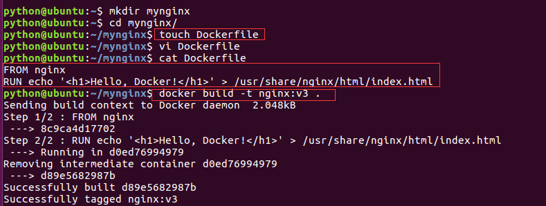

dockerfile入门
以nginx镜像为例，这次我们使用 Dockerfile 来定制。
1.创建Dockerfile
在一个空白目录中，建立一个文本文件，并命名为Dockerfile：
$ mkdir mynginx
$ cd mynginx
$ touch Dockerfile
1、大： 首字母必须大写D
2、空： 尽量将Dockerfile放在空目录中。
3、单： 每个容器尽量只有一个功能。
4、少： 执行的命令越少越好。
其内容为：
FROM nginx
RUN echo '<h1>Hello, Docker!</h1>' > /usr/share/nginx/html/index.html
这个 Dockerfile 很简单，一共就两行。涉及到了两条指令，FROM和RUN。
2.FROM 指定基础镜像
所谓定制镜像，那一定是以一个镜像为基础，在其上进行定制。就像我们之前运行了一个nginx镜像的容器，再进行修改一样，基础镜像是必须指定的。而FROM就是指定基础镜像，因此一个Dockerfile中FROM是必备的指令，并且必须是第一条指令。
3.RUN 执行命令
RUN指令是用来执行命令行命令的。由于命令行的强大能力，RUN指令在定制镜像时是最常用的指令之一。
Dockerfile 中每一个指令都会建立一层，RUN也不例外。
4.构建镜像
这里我们使用了docker build命令进行镜像构建。其格式为：
docker build [选项] <上下文路径/URL/->
在Dockerfile文件所在目录执行
$ docker build -t nginx:v3 .
-t 表示 imagename:tag
.表示当前目录

5.查看效果
python@ubuntu:~/mynginx$ docker images
REPOSITORY TAG IMAGE ID CREATED SIZE
nginx v3 a0c76822ec6d 3 seconds ago 109MB
nginx latest 8c9ca4d17702 4 days ago 109MB
ubuntu latest 47b19964fb50 3 weeks ago 88.1MB
registry latest d0eed8dad114 4 weeks ago 25.8MB
python@ubuntu:~/mynginx$ docker run -dit -p 192.168.229.128:1122:80 nginx:v3
5f855ca915ef17014ac10c8997f69f7acc9fcb684f6b2b92699c573d162aba88
python@ubuntu:~/mynginx$ docker ps
CONTAINER ID IMAGE COMMAND CREATED STATUS PORTS NAMES
5f855ca915ef nginx:v3 "nginx -g 'daemon of…" 3 seconds ago Up 2 seconds 192.168.229.128:1122->80/tcp elastic_proskuriakova
python@ubuntu:~/mynginx$ curl 192.168.229.128:1122
<h1>Hello, Docker!</h1>